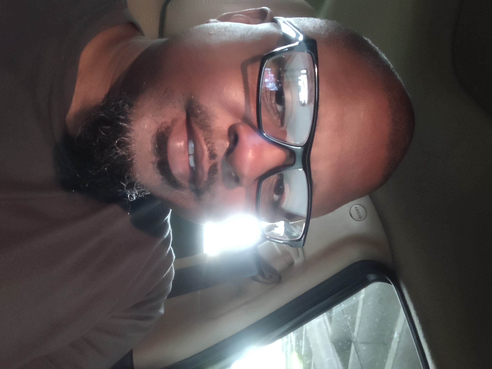

About Me

Harold Rogers
Network Infrastructure Student | U.S. Navy Veteran
I am an Indianapolis native and a proud veteran of the U.S. Navy, where I served four years on active duty. Currently, I am nearing the completion of my Associate of Applied Science in Network Infrastructure at Ivy Tech Community College, with an expected graduation in Fall 2026. My academic journey is supported by the VA, allowing me to pivot from a background in customer service toward a high-impact career in technology. My current focus is mastering the building blocks of modern networking. Alongside my core curriculum, I am preparing for the Cisco CCNA certification and expanding my programming toolkit through Python. While my previous experience with Python involved visual logic tools like Raptor, I am now diving into its actual syntax and structure to build marketable projects and potentially pursue PCEP/PCAP certifications. Upon completing my Associate's degree, I plan to transfer to a four-year university to earn my Bachelor’s degree. My ultimate goal is to secure a position in Network Infrastructure where I can apply my military discipline, technical knowledge, and problem-solving skills to build and maintain robust systems. /p>